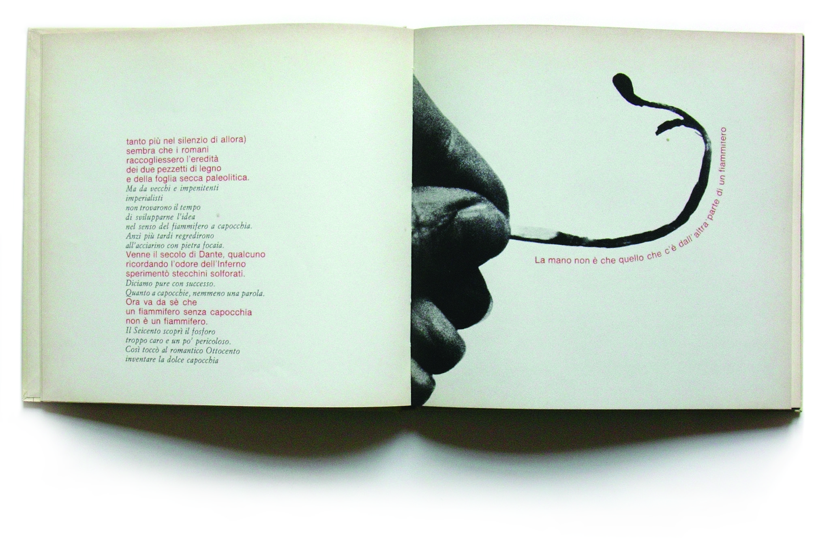
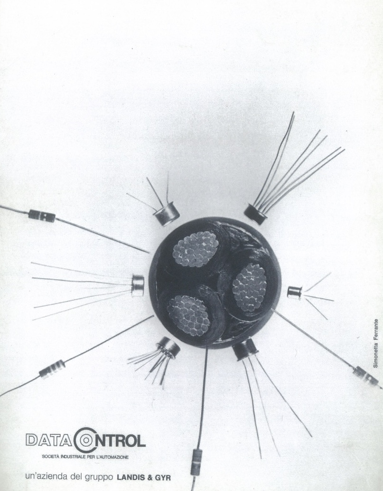
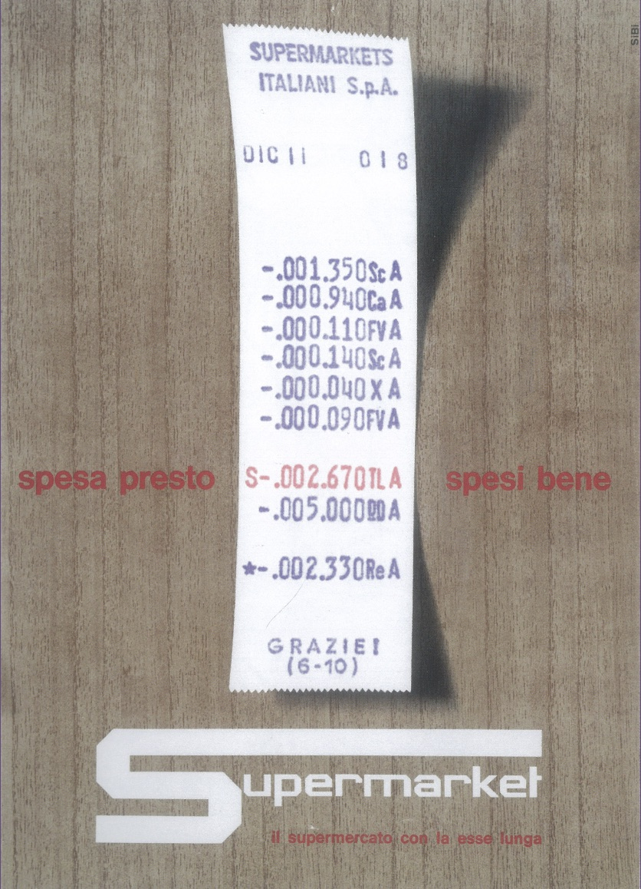
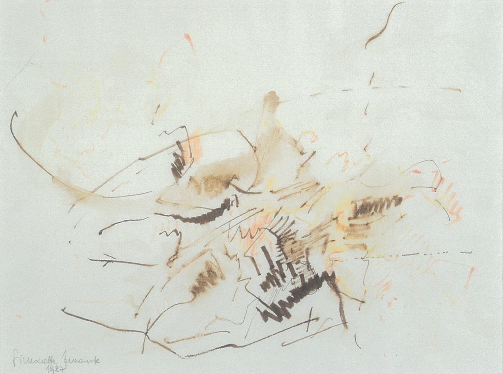

1 / 4
-
Simonetta Ferrante
2016 -
La gioia di scrivere (da un verso di Wislawa Szymborska), 2012
Chiasso m.a.x. museo, Archivio Simonetta Ferrante -
Beirut (1963)
Chiasso m.a.x. museo, Archivio Simonetta Ferrante -
Olas detras la mar (2013)
Chiasso, m.a.x. museo, Archivio Simonetta Ferrante -

Il fiammifero (Simonetta Ferrante e Gianni Rossi, 1969)
Milano, Centro di Documentazione sul Progetto Grafico di AIAP (AIAP CDPG) -

Annunci pubblicitari Data Control (1971)
Milano, Centro di Documentazione sul Progetto Grafico di AIAP (AIAP CDPG) -
Mar Absoluto (2001)
Chiasso, m.a.x. museo, Archivio Simonetta Ferrante -
Simonetta Ferrante con Beatrice Kuenzy (Edinburgh, 1958)
-
 Mar Absoluto (2001)
Mar Absoluto (2001)
Chiasso, m.a.x. museo, Archivio Simonetta Ferrante -

Locandina Esslunga (1967)
Fotografia di Serge LibiszewskiMilano, Centro di Documentazione sul Progetto Grafico di AIAP (AIAP CDPG) -

Ascoltando Mozart (1987)
Chiasso m.a.x. museo, Archivio Simonetta Ferrante -
 Biglietto d'auguri per Helena Rubenstein (1971)
Biglietto d'auguri per Helena Rubenstein (1971)
Milano, Centro di Documentazione sul Progetto Grafico di AIAP (AIAP CDPG) -
 Cartoncino pubblicitario Farmitalia (1959)
Cartoncino pubblicitario Farmitalia (1959)
Milano, Centro di Documentazione sul Progetto Grafico di AIAP (AIAP CDPG) -
Layout scolastico su cartone
Locandina (London, 1958)Milano, Centro di Progettazione sul Progetto Grafico di AIAP (AIAP CDPG) -
Mar absoluto (2001)
Chiasso m.a.x. museo, Archivio Simonetta Ferrante